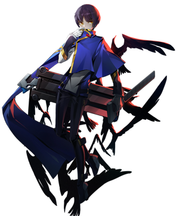

◈ NINJA · BACKSTAB SPECIALIST
Hibiki
BlazBlue: Entropy Effect — Персонаж
85
Атака
50
Защита
85
Скорость
65
HP
★★★
Сложность
Ближний
Тип боя
Hibiki — ниндзя-подобный персонаж BlazBlue Entropy Effect. С быстрыми атаками, высокой мобильностью, двумя мечами и клонами, Hibiki способен наносить высокий урон как вблизи, так и на расстоянии. Приоритет атаки со спины позволяет максимально использовать его пассивный талант.
Way of Assassination
Oblivion Glaives
Stealth

01
Досье персонажа
Имя
Hibiki Kohaku
Титул
Captain of the Controlling Organization
Оружие
Парные мечи / Глефы
База HP / Атака
1100 / 146 (38 потенциалов, +760%)
Роль
Rushdown / Backstab-специалист
Особенность
Клоны, скрытность, высокий урон со спины
Боевые характеристики
ATK85
DEF50
SPD85
HP65
RANGE60
SKILL85
Талант (Talent)
The Way of Assassination
Атака врагов со спины увеличивает базовый урон атаки на +100%. Hibiki может разворачивать врагов с помощью [Ground] Attack комбо или Heavy Strike. Клоны из Endlos Lace могут быть улучшены для автоматической атаки со спины.
Атака врагов со спины увеличивает базовый урон атаки на +100%. Hibiki может разворачивать врагов с помощью [Ground] Attack комбо или Heavy Strike. Клоны из Endlos Lace могут быть улучшены для автоматической атаки со спины.
02
Навыки и приёмы
Splitting Glaives
Legacy Skill 1
Выпускает несколько глеф вокруг прототипа. Один враг может быть поражён максимум 4 раза.
Урон и количество попаданий увеличиваются с уровнем. Быстрый инструмент для создания
пространства и нанесения урона по площади.
Cover of Darkness
Legacy Skill 2
Вводит прототип в состояние "Stealth and Haste" на 8 секунд. Первая атака в этом состоянии
триггерит surprise attack. Урон surprise attack увеличивается с уровнем и зависит от
расстояния до врага. Враги перестают атаковать или бьют в пустоту.
[Ground] Attack — 4-hit Combo
Базовая атака
Комбо из 4 ударов, которое слегка продвигает Hibiki вперёд с каждым ударом.
С потенциалами: Swallow Dance — [Ground] Down + Attack x4: новая комбо из 4 ударов
с использованием глеф. Комбо разворачивают врагов, активируя пассивный талант.
[Airborne] Attack & Piercing Feather
Воздушная атака
Hibiki рубит вниз и вперёд, затем выполняет diving attack. Удержание "вниз" при атаке
заставляет его немедленно пикировать. Piercing Feather: первый удар [Airborne] Attack
бросает несколько кинжалов вниз (до 3 раз подряд с потенциалами).
Dash & Whirlwind Roll
Уникальный Dash
Hibiki делает кувырок вперёд с Dash Invulnerability. Whirlwind Roll: Skill > Dash —
после использования Oblivion Glaive Hibiki вращается в воздухе, нанося урон вокруг.
С Triple Dash можно выполнить до 3 Whirlwind Rolls подряд без задержки.
Skill: Oblivion Glaive
[Ground] / [Airborne] Skill
Hibiki призывает круг из Oblivion Glaives вокруг себя (MP:100). С потенциалами:
глефы становятся больше и наносят больше урона; вращаются и следуют за Hibiki;
Skill > Attack — большой диагональный разрез с огромным уроном.
Heavy Strike & Double Wing Rapid Cyclone
[Ground] Hold Attack / Up + Attack
Hibiki делает большой шаг вперёд и рубит вверх, разворачивая врагов.
С потенциалами: больше, разрушает Super Armor, неуязвимость во время шага.
Double Wing Rapid Cyclone: [Ground] Up + Attack — вращающийся удар вверх с неуязвимостью.
Можно использовать в воздухе. Up + Attack > Down + Attack — plunging attack.
Staggering Cuts
[Ground] Down + Hold Attack
Hibiki выполняет 3 (до 5 с потенциалами) удара, прыгая влево и вправо. Если 3-й удар
попадает по врагу, выполняется большая атака. С потенциалами: неуязвимость,
сброс кулдауна при попадании последним ударом.
Triple Jump & Air Reset
Потенциал
Hibiki может совершать тройной прыжок. При получении урона может немедленно
восстановиться прыжком и стать неуязвимым на 1 секунду. В воздухе может использовать
Jump или Dash для сброса лимита [Airborne] Attack.
Endlos Lace (Clones)
Уникальная механика
Hibiki может призывать клонов через определённые потенциалы. Клоны атакуют врагов
и могут быть улучшены для автоматической атаки со спины, гарантируя бонус от
The Way of Assassination.
03
Основные механики
The Way of Assassination — атаки со спины
Ключевой пассивный талант Hibiki даёт +100% к базовому урону атаки при ударе
со спины. Hibiki специализируется на развороте врагов и нанесении ударов сзади. Его наземное
комбо и Heavy Strike разворачивают врагов, а клоны из Endlos Lace могут быть настроены на
автоматическую атаку со спины. Максимизация этого бонуса — ключ к раскрытию полного потенциала
Hibiki.
Разворот врагов
[Ground] Attack комбо и Heavy Strike разворачивают врагов, позволяя немедленно
воспользоваться бонусом +100% к урону от атак со спины.
Скрытность и перерыв
Cover of Darkness делает Hibiki невидимым для врагов на 8 секунд. Это даёт время
на восстановление, перепозиционирование или подготовку мощной surprise attack.
Whirlwind Roll мобильность
С Triple Dash и Whirlwind Roll Hibiki может выполнять до 3 вращающихся атак подряд
без задержки. Это даёт ему невероятную мобильность и возможность наносить урон в движении.
Oblivion Glaive комбо
Skill > Attack после Oblivion Glaive выполняет мощный диагональный разрез с огромным уроном.
Это один из основных источников burst-урона Hibiki.
04
Советы по игре
- 🗡️Всегда старайся атаковать со спины. +100% к урону — это удвоение. Используй разворот из комбо или Heavy Strike, чтобы получить этот бонус.
- 🗡️Oblivion Glaive > Skill > Attack — твой бурст. Это комбо наносит огромный урон. Старайся использовать его, когда враг обездвижен или оглушён.
- 🗡️Используй Cover of Darkness для передышки. 8 секунд невидимости дают время восстановить MP, перепозиционироваться или подготовить surprise attack.
- 🗡️Освой Whirlwind Roll. До 3 вращающихся атак подряд без задержки — это и мобильность, и урон. Идеально для уклонения и контратак.
- 🗡️Staggering Cuts сбрасывает кулдаун. При попадании последним ударом кулдаун сбрасывается, позволяя использовать его снова немедленно.
- 🗡️Double Wing Rapid Cyclone даёт неуязвимость. Используй его как panic button для избегания опасных атак и контратаки.
- 🗡️Splitting Glaives — отличный AoE. Быстрый навык для создания пространства и нанесения урона по площади, особенно против групп врагов.